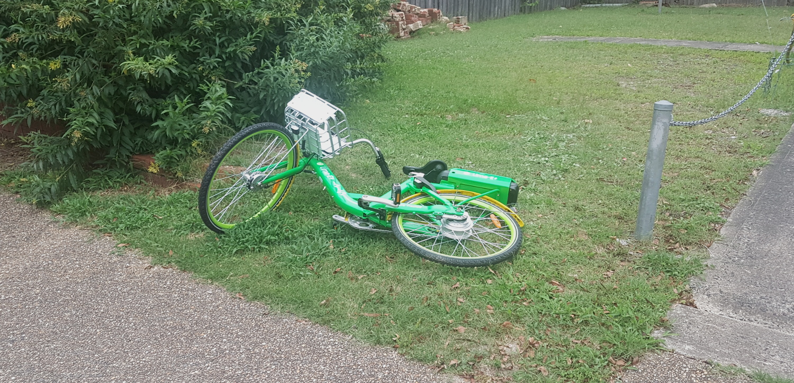

Why you should think twice before riding a Lime e-bike
You really should read those terms and conditions

Think about Samsung's spontaneously-combusting Galaxy Note 7 phones. The battery in an electric bicycle (e-bike) is about 100 times larger than a phone battery. So imagine sitting on a pile of 100 Galaxy Note 7 phones. That is how much potential there is for things to go wrong with e-bikes.
A company called Lime recently launched an e-bike rental scheme in Sydney, Melbourne and Brisbane. If you're thinking of hopping on one of those green bikes, you should actually read the terms and conditions first.
If you get injured by a Lime bike battery because of bad luck, incompetence, negligence of even outright malice by Lime, you cannot take any legal action against them. This is because their terms and conditions grant them immunity from all laws, statutes, rules, regulations and constitutions. (This is thanks to Sections 2.3, 2.8, 12.3.3 of their terms, and many others, listed below.) By agreeing to their villainous terms and conditions, users give away the right to class actions, as well as individual legal actions. Class actions allow people to group together to take action against a company who systematically harmed many people due to incompetence or malice. Famous examples of class actions include the time Sony deliberately infected millions of computers with malware, and when Pacific Gas and Co. knowingly dumped carcinogens into local groundwater. Lime's terms take away both your right to class action, as well as individual legal action, which leaves very little legal protection to prevent them from misbehaving. If Lime conduct their business ethically, legally, and competently, there is no reason why they should need a clause protecting them from class actions, let alone 3 clauses.
Lime says you still have the possibility of arbitration. Arbitration means that instead of having your case heard in a court of law with a jury of peers, your case is heard in a privatised kangaroo court. The "judge" may be a contractor of Lime, and the customer almost never wins. Even this poor avenue for justice may not be available to you, because Section 2.4 implies that customers outside the USA cannot arbitrate either. Lime are still are able to take action against you in a real court though.
Lime's terms and conditions are longer than my honours thesis. Large chunks are not at all applicable to Lime bikes. My favourite clauses are:
- If someone else is hurt by a malfunction with the bike you're riding (such as poorly maintained brakes causing a collision) you will be liable for that other person's injury. (Sections 6.2, 7.4.5 and others)
- Lime do not claim their products are fit for purpose. (Section 6.1) Take a moment to let that sink in. Imagine yourself riding down a steep hill on a bike with brakes that are not fit for purpose.
- If you do manage to somehow win an arbitration case against Lime, the maximum penalty you can extract is $100. For example, if their batteries explode and you incur $100,000 in medical bills to treat your burns, the maximum payment you can get from Lime is $100, leaving you $99,900 out of pocket. (Section 7.3)
- There have been many news stories recently about bakers refusing to make cakes for same sex weddings. In a similar vein, 6 different clauses all give Lime the right to discriminate against you based on sexual orientation, skin colour, political opinion and so on. (They phrase this as refusing service "for any reason".) They're also allowed to trawl through your social media profiles to obtain this information. (Sections 4.1, 9.2, 10.2, 12.13, 12.19, 12.23) I wonder why Lime needs so many overlapping clauses which all grant them this power?
- iPhone users are not allowed to use the app in a "Terrorist supporting country", but Android users are. (Section 12.28)
- If Lime maliciously rigs the bike battery to deliberately explode and murder you, you and your heirs are not able to take any legal action against them. (Sections 2.3, 2.8, 5.1, 6.1, 6.2, 7.4, 7.4.5, 12.3.3) Hopefully the courts would rule those clauses as invalid. However that fact that this is what their terms say is worrying.
- Users are not allowed to mention the word "Lime" in any email, Tweet, WhatsApp message or other online channel (even private), since that is an online usage of their trademark without permission. Uploading a photo to Instagram which happens to have a Lime bike in the background is a violation. (Section 12.10)
- They're allowed to install malware and cryptojackers on your phone. If they hijack your phone's Internet connection to download child porn or other illegal media, you cannot take legal action against them. (Sections 6.2.5, 8.1)
- They can switch on your phone's camera and microphone without your knowledge. Or they can install a hidden camera in the bike, then do whatever they want with that media, without even notifying you. For example, they can take up-skirt photos and post them on Pornhub. (Section 12.8, 6.2.10)
- Users and their family are not allowed to take unrelated legal action against anyone who happens to work for Lime, even if the issue is unrelated to lime. (Section 5.1)
- Users agree to read the entire 30,000-word terms and conditions every time they ride. (Section 12.25.5)
- The terms and conditions are obsessed with copyright, especially about the possibility of users violating the copyright of third parties. This is strange for a company that just rents out bicycles. They even have DMCA takedown clauses, and you give them control over your "content ... in perpetuity and throughout the universe". (Sections 12.11, 12.24) It is not clear what "content" is for a bike rental company where users cannot post anything on their website.
- They can make false claims about their prices. (Sections 4.9, 6.2.6)
- Section 4.9 says that "If a product You purchased from Lime is not as described, Your sole remedy is to return it in unused condition, complete and undamaged, in the original packaging." Users acquire their bikes by finding them without any packaging, on the side of the street. This clause is not applicable, and is the first hint that this entire document was blindly copied and pasted from a template for an unrelated industry. (The entirety of Section 12 is the other hint.)
- The app has a map with icons of their available bikes. The terms say they may put fictitious icons on the map which do not match a real bike, to mislead the users into thinking they have more bikes than they do. (Section 6.2.6, 4.10) For context, this is what Uber already does.
- Lime are allowed to send you robocall spam, even if your number is on the Do Not Call list, even after you close your account. (Section 11.3) They claim that giving them a phone number is optional. However that is not a meaningful choice because Section 11.4 grants them the right to contact you via phone numbers and email addresses which they acquired by "other means". Those "other means" are not specified.
- If their GPS tracking is inaccurate and as a result they cannot find the bike, they may report you as a thief to the cops. (Section 12.2)
- Lime "makes no representation that the service is applicable or available or use outside the USA". However Sydney, Melbourne and Brisbane are listed on the "Locations" page of their website, bike icons appear on the map in those cities in their app, which correspond to real Lime bikes which Lime placed in those cities. When a company does something and claims the exact opposite, you should be worried. (Section 12.23)
- Lime claim they have no obligation to keep your personal information (including credit card info) secure. (Sections 4.11, 6.2.4)
- If they charge you an incorrect amount (such as $1,000,000 for one ride) and it takes you more than 60 days to notice, there's nothing you can do to get a refund. (Section 4.4)
- If you forget to lock the bike, you can be charged 600 USD. (Section 3.3)
- If you alert them to a safety issue with their bikes, they have no obligation to fix them. (Sections 6.2.7, 12.23)
I am not a lawyer. I suspect that many of the clauses are legally invalid, because some consumer rights are inalienable. For example, many "no refunds" policies do not take away your right to a refund. However you would have to take Lime to court to find out which terms hold up judicial scrutiny. It is also unclear how the laws work across international borders. Australia has far stronger consumer protections than the US, however Section 2.9 says that you give up Australian laws and agree to be bound by US laws. I am not sure whether that is legally valid. Lime did not respond to my questions. (Section 12.23 of their terms and conditions say they are not obliged to reply.)
I am not alleging that Lime have committed any bad acts, only that their terms say that they can. This is still bad. If someone points a loaded gun at you and promises not to shoot, would you feel safe?
The Full List
Terms and Conditions
Lime's terms and conditions can be found here (Internet Archive copy). Here is a more comprehensive and detailed list of the notable terms and conditions:
Section 2.3 states (emphasis added):
Any and all disputes arising between you and Lime (whether based in contract, law, statute, rule, regulation, ordinance, tort including, but not limited to, fraud, any other intentional tort or negligence, common law, constitutional provision, respondeat superior, agency and/or any other legal or equitable theory), whether arising before or after the effective date of this agreement, must be resolved by final and binding arbitration. This includes any and all disputes based on any product, service or advertising connected to the provision or use of the services ... by agreeing to arbitrate, each party is giving up its right to go to court and have any dispute heard by a judge or jury
This is the first clause which removes your right to take Lime to court if they are negligent, incompetent or malicious. Sections 2.4 and 2.8 act as a second and third clause to protect Lime against class action and individual legal action. Here's a nice joke I heard once which helps explain the importance of class actions.
A businessman sells 1000 raffle tickets for $1 each, which gives him $1000. He claims that the raffle prize is a large bull.
A week after declaring a winner, he delivers the corpse of a dead bull to the winner's farm.
The winner is aghast, because this is not the prize he was promised. So the businessman politely refunds the winner's $1.
Usually class action laws would prevent the businessman from keeping the remaining $999. However Lime have 3 clauses exempting them from those protections. They are clearly trying very hard to prevent class action suits. It makes you wonder whether they know something about their service which we do not.
Section 2.4 states that
[arbitration] will be conducted in the "metropolitan statistical area" (as defined by the U.S. Census Bureau) where You are a resident at the time the Dispute is submitted to arbitration
So if you're an Australian, you may not even be able to have an arbitration hearing.
The Arbitrator may award declaratory or injunctive relief only in favor of the claimant and only to the extent necessary to provide relief warranted by the claimant's individual claim.
So if Lime designed their batteries incompetently and they start exploding and injuring people, you can only arbitrate to get back money for your individual medical bills (and as mentioned before, this is capped at $100 by Section 7.3). You cannot arbitrate for a larger amount of money which reflects the harm Lime would have done to society at large. This means that Lime is financially protected against large scale fuck-ups.
Section 2.6 imposes a 1 year statute of limitations on claims against them. If Lime use asbestos to make their brake pads and you do not notice until you start dying of asbestosis a decade later, you cannot take any legal action (even arbitration) against them.
Section 2.7 states that whilst you cannot take them to court (only arbitration), they can still take you to court.
Section 2.7 is also the first mention of "Lime's intellectual property rights". Lime's obsession with copyright is strange, given that they are a hardware rental company. Also, "intellectual property rights" are a deliberately imprecise term, crafted to blur the lines between copyright, patents, trademarks and trade secrets. Each of those legally enforced monopolies exist for unrelated reasons.
Section 3.2 states that
Lime reserves the right to modify or cancel Discounts at any time
Similarly, Section 4.3 states the following with unnecessary caps-lock:
PLEASE NOTE THAT YOU WILL NOT RECEIVE A NOTICE FROM US THAT YOUR FREE TRIAL HAS ENDED OR THAT THE PAID PORTION OF YOUR SUBSCRIPTION HAS BEGUN. WE RESERVE THE RIGHT TO MODIFY OR TERMINATE FREE TRIALS AT ANY TIME, WITHOUT NOTICE AND IN OUR SOLE AND ABSOLUTE DISCRETION.
So you may hop on a bike thinking that you've got a 90% discount or a free trial, but then Lime decides to charge you the full price anyway.
If you pay for a monthly or yearly membership, they can cancel it at any time without refunding you, for any reason. For example, they can cancel your annual membership with 364 days remaining, without giving you a refund.
According to Section 4.4:
If there are any discrepancies in billing, You hereby waive Your right to dispute such discrepancies if You do not notify Lime within sixty (60) days after they first appear on an account statement.
So if they over-charge you for a ride (such as charging you $600 for not locking the bike even though you really did), and you do not notice for 2 months, you will not ever get that money back.
Thanks to Section 4.7, Lime has no obligation to refund you, even if the bike is faulty. Under Australian consumer law it is illegal for a company to make this claim.
In Section 4.8 they claim that an order confirmation is not confirmation that they accept your order. They may reject your valid order after the order is confirmed, for any reason. I wonder what Lime think the purpose of an "order confirmation" is.
Section 4.9 claims:
We do not warrant that specifications or pricing on the Services is complete, accurate, reliable, current, or error-free.
So even though the app may say that it is "only $1 to unlock", they may be planning to charge you $100 to unlock. I recommend keeping an eye on your bank account, so that you can notify them of any over-charging before the short time window they impose expires.
One of the most bizarre sections is Section 4.9.
If a product You purchased from Lime is not as described, Your sole remedy is to return it in unused condition, complete and undamaged, in the original packaging.
This is not at all applicable to Lime. The only products they offer are bikes and scooters which you find on the footpath, unwrapped. So how can you return it in the "original packaging"? Where do you return it to? I suspect they blindly copied and pasted their terms and conditions from some boilerplate template, without reading it. If they cannot be bothered to read their own terms and conditions then it is unreasonable to expect users to read it, let alone every time you ride.
Lime's terms and conditions are incredibly long. It took me over two hours to read them all. If you use a 'read later' service such as Pocket to save the terms and conditions across devices for offline reading in a format accessible for visually-impaired people, you are technically violating Section 12.8. That is because you are not allowed to download "the Content" to non-temporary storage. For the same reason, services like The Internet Archive are prohibited from making a copy of Lime's terms and conditions.
Section 4.11 states that if your legal name sounds fake, they can refuse service.
Section 6.2.4 states that
[Lime] make no representations, warranties, endorsements, or promises ... as to ... security associated with the transmission of Your User Submissions transmitted to Lime via the Services
Similarly Section 4.11 states:
You are entirely responsible for the security and confidentiality of Your password and account
If you read this literally, it means Lime is not responsible for the security and confidentiality of your password and your account. So they claim to have no obligation to used standard best practice for digital security, such as encrypting traffic, or hashing and salting (scrambling) passwords. Given that your account includes location history, financial payment details, and many other pieces of personal information, it is unsettling that their terms do not provide a clearer obligation upon them to be secure. Thankfully other laws do over-rule this and force Lime to treat your information somewhat securely, however it is not clear from Lime's User Agreement that they are aware of this.
That same section also says:
Please note that anyone able to provide Your personally identifiable information will be able to access Your account so You should take reasonable steps to protect this information
It is not clear what information is required to gain access to your account. Probably name, birthday, email address and phone number. How many people and organisations already know those 4 things about you?
Shockingly Section 5.1 claims that you and your family cannot take legal action against anyone associated with Lime, even action unrelated to Lime.
You and for all of Your family ... fully and forever release and discharge all Released Persons for any and all Claims that You have or may have against any Released Person
Lime probably did not intend this clause to be that broad. However they could have clarified "any and all claims" to restrict it to claims related to the service. They chose not to make that restriction.
Two years ago a Queensland police officer deliberately leaked location information to his friend about the friend's partner, who was trying to escape the physical and sexual abuse committed by that friend. According to Section 5.1, if a Lime employee does the same thing with the location data they have, that victim cannot take any legal action against lime. Taken to the extreme, this protection against "any and all claims" means that if a Lime employee tries to deliberately rig an e-bike battery to explode and kill you, the terms prohibit you from taking legal action against Lime or that employee. There are hopefully Australian laws which over-rule this clause. However as mentioned before, it is unclear whether Australian laws even apply at all, since users agree to release Lime from those laws, replacing them with American laws instead. (Section 2.9) Therefore the presence of such a clause is cause for concern. Why would Lime want to protect individual employees who do the wrong thing?
Lime's terms and conditions are already extremely long, dull and hard to read. Section 5.2 takes it one step further, with legalese so strong that I can not guess what they're trying to protect themselves from.
You expressly agree and acknowledge that You may discover facts or law different from, or in addition to, the facts or law that You know or believe to be true with respect to the Claims and the Released Persons.
What does that even mean?
Lime's user agreement is full of excessive caps-lock. Section 6.2 is such an example.
ALL OF THE SERVICES, PRODUCTS, AND RELATED EQUIPMENT ARE PROVIDED "AS IS", "AS AVAILABLE" AND "WITH ALL FAULTS" (AND YOU RELY ON THEM SOLELY AT YOUR OWN RISK)
This means that if their bikes are designed hazardously, they are not at fault. You bear all the risk of possible faulty brakes and spontaneously-combusting batteries. Furthermore, Section 7.4 states that any injuries they cause are not their fault, even if you get injured from "known" and "foreseeable" risks. As if this was not bad enough, Section 7.4.5 adds that.
if Your use of any of the Services, Products, and/or related equipment causes any injury or damage to another person or property, then You will be liable for any and all consequences, claims, demands, causes of action, losses, liabilities, damages, injuries, fees, costs and expenses, penalties, attorneys' fees, judgments, suits and/or disbursements of any kind, or nature whatsoever, whether foreseeable or unforeseeable, and whether known or unknown
I am not sure what precisely "Your use" means. I interpret it to mean that if Lime knows about a fault with their bike, then you ride it and that fault causes someone else to get injured, you will be liable, not Lime (because that injury would not have happened if you had not used the service).
If you die because of a faulty Lime bike, Lime claim they are not liable. (Section 12.3.3) Once again, Lime could have limited this clause to death that is not Lime's fault (e.g. collision with a drunk driver). However they chose not to make such a restriction, instead preventing you from taking action against them if they kill your friend or family member.
I wonder why Lime needs five separate clauses to protect themselves from legal action in response to life-threatening incompetence and malpractice.
Section 6.2.6 is a very broad 'Get Out of Jail Free card' saying that any claims Lime make about their service can be false. If you point out such false statements, product faults or safety issues, they have no obligation to fix them. (Section 6.2.7)
Section 12.7 is one of the more worrying clauses, partly because it is not at all necessary for a share bike rental service.
[You] give Your full and unconditional consent to Lime ... the right to photograph, videotape ... Your use of the Services, at any time ... and (c) the right to use, ... distribute, ... and exploit, at any time ... such photographs, videos, and other recordings.
So they they can switch on your phone's camera and microphone without your knowledge, or install a hidden camera in the bike. If that was not bad enough, the clause also continues to say that
[You] waive, release, and discharge Lime and all Released Persons from all Claims that You have or may have for any libel, defamation, invasion of privacy
The capitalisation of "Claims" is another example of Lime's inclination to ungrammatically capitalise words. More importantly, this clause leaves open the possibility of Lime installing secret cameras to take up-skirt photos of users riding their bikes, and upload them to PornHub. I am not claiming that Lime do this, and I hope that other laws would over-ride this clause to make such acts illegal. However the fact that Lime has written terms and conditions which try to grant them such broad and unnecessary rights is indeed worrying.
Most of Section 12 is simply not applicable. Those clauses are all about users posting content to a web service, which is not applicable to a share bike company. This is yet another oddity which makes me suspect Lime blindly copied and pasted their terms from a template, without thoroughly reading them. For example, Section 12.11 talks about "Your submissions" and gives them "the unfettered right to sublicense such rights, in perpetuity throughout the universe". (Emphasis added.)
DMCA is a legal framework for legally enforceable copyright takedown requests. For example, movie studios issue DMCA takedown notices when they want Google to delete pirated movies hosted on YouTube. Lime are a bicycle hire company who do not have a website where users can upload content. So I cannot think of any reason why Lime's terms needed to include DMCA clauses. (Section 12.24)
Lime will not let you use Lime's trademark in any way without their explicit permission. (Section 12.10) If you take a photo of a public space which happens to show a Lime logo on a bike which is in the background, that is a violation of their terms. If you write a tweet or send a WhatsApp message mentioning the name "Lime", that is a violation too. If you share this article on social media, the thumbnail is a picture of a Lime bike. So by sharing this article you will be technically violating their terms.
That same section explicitly prohibits me from using a picture of a Lime bike up the top of this article. It even prohibits me from using the word "Lime" in this article.
[You are not allowed to] post ... Lime trademarks in any way, including ... publicity pertaining to distribution of materials on the Services, without Lime's prior written consent
I do not want my freedom of speech to be limited by a bicycle hire company, which is one reason why I have not agreed to Lime's User Agreement, and wrote this article instead. Once again this is a clause which is needlessly broad. They are restricting your rights significantly, without justification. Most countries have laws to cover misrepresentation of a company, and defamation. Lime's trademark is already protected by all the normal trademark laws. I cannot think of any reasonable justification why such laws are not sufficient for a bike rental company.
As mentioned above, Section 12 is mostly irrelevant clauses about posting user content to a website. Section 12.13 states that if they think it is "likely" that you will submit content they do not like, they can do anything to "cure" that. For example, if they see you post a strong political opinion on Facebook, they can cancel your account (without refund).
Read the following extract from Section 12.16 while keeping in mind that this is a company whose sole business is short term bicycle hire.
There may also be risks of dealing with ... international trade issues
Is that really necessary? Lime are asking users to read the entirety of these terms every single time they ride. I do not get the impression that they tried to keep these terms brief enough to be user friendly.
If you lose your phone, what is the first thing that comes to mind? Thanks to Section 12.21, you are obliged to tell notify Lime. Have you ever told your friend or partner what your phone's lockscreen code is? If you do, you are obliged to notify Lime of this.
Section 12.23 is a huge wall of text, which contains a few noteworthy points. As mentioned earlier, it states that Lime are not obliged to respond to any enquiries. In general, most people visiting websites and using apps click "I agree" without actually reading the terms and conditions they are agreeing to. If you're better than that and actually skim through the terms, you may still be screwed over. This section of Lime's terms state that the headings in their terms are meaningless. Only the smallest fine print really matters. Even if you do read all the fine print, it does not provide any meaningful guarantee. Thanks to Section 12.25 Lime can change the terms and your next use is assumed to be an agreement. They only need to "notify you", which can involve simply updating the web page linked to in the app menu. This is probably why (Section 12.25.5) makes you promise to read the whole terms and conditions and privacy statement each time you ride.
One of the most shocking sections is Section 12.23.
Lime makes no representation that the Services is appropriate or available for use beyond the U.S.A
This is surprising because Sydney, Brisbane and many other non-American cities are listed on the "Location" page of Lime's website. If you open up their app you will see bike icons in Sydney. So apparently an icon on a map of Sydney in Lime's app showing a Lime bicycle located in Sydney, corresponding to a physical Lime bike which Lime put in Sydney is not a "representation" that Lime bikes are available in Sydney.
Privacy policy
Lime's privacy policy can be found here (archive).
- They collect "demographic information". This is not defined. In other contexts this typically includes ethnicity, citizenship status, age, religion, income, home address, drug usage habits and so on.
- They may view and collect anything you post on any social media which they can find.
- They may obtain your credit card history and credit rating.
- Lime allows the following companies to track you when you visit Lime's website: AdRoll, Amazon, AppNexus, Atlas, Bizo, Brightcom, Criteo, DoubleClick, DoubleVerify, Facebook, CustomAudience, Flashtalking, Google Adsense, IAS MOAT, Krux, Media.net, OpenX, Peer39, Pointroll, RevContent, Rubicon, SimpleReach, Sizmek, SLED, Sonobi, SpotXchange and Teads. Given that Lime's website is a simple static website, I question whether it is necessary to allow all those companies to spy on users.
- The Do Not Track standard is a browser setting which allows users to tell websites that they do not want to be excessively tracked as they traverse the web. Lime say that they ignore this setting and will track you anyway.
- There is a lot of text talking about advertising, and how to change your Google and Facebook ad settings. This is surprising since Lime do not have ads on their website or in their app.
- They say they may collect information about you from unspecified third parties
Surprisingly there are some reasonable parts to the privacy policy.
- You have the right to be forgotten.
- You have the right to export your data in a "structured, commonly used and machine-readable format".
- You have the right to withdraw consent to marketing. However this is somewhat contradicted by Sections 11.3 and 11.4 of their terms.
- There are rumours that share bike companies sell your data to advertisers. That is not allowed under this policy. Although they do still sell your data to local governments. The clause prohibiting data sale to advertisers is not strong protection, since they can change their policy at any time to allow it. Their privacy policy claims they'll notify you of any changes, but that notification includes changing the policy document on their website, which is linked to by the app. You agree to click on that link and read the whole privacy policy every time you open the app or visit their website. They say that they will not change the privacy policy to make it less protective of the data they already have from you. This does not prevent them from changing their policy, collecting new data, and doing something with that data which you do not approve of.
Conclusion
We all know that there are countless companies these days with needlessly long terms and conditions, written in legalese, which take away your rights. However I believe that Lime's terms are far worse than most companies. There are 5 clauses protecting them from legal action in response to life-threatening malpractice and incompetence. There are 6 clauses giving them the right to discriminate against you, as well as clauses which restrict your right to free speech.
Is all this really worth it just for bicycle rental?